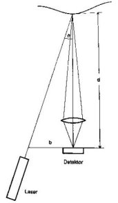

|
Ahmet
Çakýr
Uzay Mühendisi
Defne
Mühendislik Ltd. Þti.
Eylül 2005
Giriþ:
Fotoðraf,
en geniþ anlamý ile 3 boyutlu dünyayý 2 boyutlu resimlere
dönüþtürme iþlemi olarak düþünürsek, 3 boyutlu tarama iþlemini
bu iþlemin tersi yani 2 boyutlu fotoðraflar yardýmý ile 3
boyutlu görüntü elde edilmesi olarak düþünebiliriz. Fotoðraflama
iþleminde ne yazýk ki bu dönüþüm iþlemini tamamiyle yapmak
olasý deðildir. Derinlik gibi bazý bilgilerin kaybolmasý söz
konusudur. Fotoðraflama iþleminde bazý bilgilerin kaybolmasýndan
ötürü 3 boyutlu görüntü oluþturmak için 1'den fazla çekim
yapmak gereklidir. Bu þekilde daha fazla bilgi edinilerek
iþlem daha iyi hale getirilir. 3D optik taramada kullanýlan
hem fotogrametri hem de topogrametri metodlarý, 3 boyutlu
cisimlerin 2 boyutlu fotoðraflarýnýn çekilmesi ve bu fotoðraflarýn
bilgisayar ortamýnda tekrar 3 boyutlu hale döndürülmesi iþlemini
hassas biçimde gerçekleþtirir. Bu iþlemler için dijital kameralar
kullanýlmakadýr. Bu kameralarda film yerine, lensler arkasýnda
ýþýk yoðunluðunu elektronik sinyallerine dönüþtüren ve bunu
bilgisayara transfer edebilen bir CCD (Charge Coupled Device)
sensör bulunmaktadýr.
3
boyutlu topogrametrik ölçüm 3'ncü boyutta görüntü iþlemede
fotogrametri ve stereometri kadar iyi bir yöntemdir. Tüm teknikler
optik üçgenleme (optical triangulation) prensibini temel alýr.
Kelime anlamý belli sayýda noktanýn konumunu kesin olarak
tespit edebilmek için, bu noktalarý tepe olarak kabul ederek
bir alaný üçgenlere bölme iþi olan "üçgenleme (triangulation)"
tüm 3 boyutlu ölçme/tarama tekniklerinin kullandýðý yöntemdir.
Çok çeþitli uygulamalarý olan üçgenleme prensibi haritacýlýktan
GPS ile konum belirlemeye kadar pek çok alanda kullanýlmaktadýr.
Bu prensiple, matematiksel olarak uzayda kesiþen doðrularýn
yardýmý ile noktanýn bulunduðu yer hassas olarak elde edilir.
3
boyutlu taramada, cisim, bir veya daha fazla kamera ile 2
boyutta taranýr. Sonra 3 boyutlu koordinat sistemine aktarýlýr.
Bilgisayar yardýmý ile cismin referanslarý veya yüzeylerinin
ve formlarýnýn nokta bulutu þeklinde ölçümlendirilmesi mümkündür.
Optik ölçüm (metrology) aktif ve pasif metodlar olmak üzere
farklýlýk gösterir.
Aktif
metodlar:
- Optik
üçgenleme (Optical Triangulation) (1D)
- Iþýk
kesiti (light section) teknikleri (2D)
- Fringe
izdüþümü (fringe projection) teknikleri (3D)
Optik
üçgenleme (Optical Triangulation): Bir lazer pointer ve
optik dedektör üçgensel bir yapýda düzenlenir, sonuç olarak
üçgensel dayanak noktasý olarak adlandýrýlan, üzerine lazerle
ýþýk düþürülen noktanýn uzaklýðý dedektör tarafýndan belirlenir.
(Þekil 1.a)
Iþýk
kesiti (light section) teknikleri: Iþýk kesiti tekniði,
optik üçgenlemenin geliþtirilmiþ halidir. Bu teknikte cismin
üzerine düþürülen bir çizgi ve optik dedektör yardýmý ile
cismin 3 boyutlu profili düzlemde elde edilir. (Þekil 1.b)
Fringe
izdüþümü (fringe projection, ýzgara izdüþümü) teknikleri:
Fringe izdüþümü tekniði ýþýk kesiti tekniðinin geliþmiþ halidir.
Bu yöntemde çoklu ýþýk kesitleri baþka bir deyiþle siyah ve
beyaz þeritler halindeki desenler cismin yüzeyine düþürülerek
ve bir ya da daha fazla yüksek çözünürlükteki kamera yardýmý
ile bilgisayar ortamýna aktarýlarak 3 boyutlu yüzey bilgisi
elde edilir. (Þekil 1.c)
|

|
|
|
|
|
|
|
|
1.a
Optik üçgenleme ve örneði
|
1.b
Iþýk kesiti tekniði ve örneði
|
1.c
Fringe izdüþümü tekniði ve örneði
|
Pasif
metodlar:
- Stereometri
(3D)
- Fotogrametri
(3D)
Stereometri:
Ölçümü yapýlacak olan cismin yüzeyi üzerine herhangi bir ýþýk
kesiti (fringe) düþürülmez. Bunun yerine cismin 3 boyutlu
yüzeyi, iki kameradan alýnan üst üste binen görüntülerden
hesaplanarak elde edilir. (Þekil 2.a)
Fotogrametri:
Bu yöntemde taranan obje bir kamera ile farklý açýlardan görüntülenip
üzerindeki indexmark'lar yardýmý ile referanslarý bilgisayar
ortamýnda 3 boyutlu nokta bulutu halinde elde edilir. (Þekil
2.b)
|
|
|
|
2.a
Ýki kamera ile stereografi
|
2.b
Bir kamera ile farklý yönlerden fotogrametri
|
3D
Tarama Sisteminde Topogrametri
3 boyutlu optik ölçüm tekniklerinde topogrametrik metodun
yapýlý aydýnlatma tekniði esnekliði ve güvenilirliði bakýmýndan
göze çarpmaktadýr. Bu tekniðin avantajlarý Breuckmann firmasýnýn
3 boyutlu tarama sistemlerinde maksimum düzeyde görülmektedir.
Bu sistemler Gri kod ve faz kaydýrma metodu ile birleþtirilmiþ
patentli MPT (Miniature Projection Technique) tekniðini kullanarak
yüksek çözünürlük ve ölçüm hassasiyetini, hýzlý veri edinme,
esnek veri analizini en iyi þekilde saðlamaktadýr.
Metod
Topogrametrik
3D sistemi, güçlü bir ýþýk kaynaðý ile cismin üzerine farklý
dokusal özellikleri olan fringe'ler düþürür. Cismin yüzeyi
üzerinde bu kodlanmýþ yapýlý ýþýklar, cismin þeklinin karakteristik
özellikleri doðrultusunda deformasyona uðrar. Yüksek çözünürlükteki
bir kamera sistemi ile bu deformasyon bilgileri alýnýr. Bu
kamera sistemi, projeksiyon sistemi ile özel bir açý yapacak
þekilde yönlendirilmiþtir. Bu açýya üçgenleme (triangulation)
açýsý denir. Cismin üzerine düþürülen fringe'lerin deformasyon
bilgileri analiz edilerek 1 milyona kadar noktanýn 3D koordinatlarý
birkaç saniye içerisinde elde edilmiþ olur. (Þekil 3 a,b)
Kullanýlan sensor sistemine baðlý olarak birkaç milimetreden
birkaç metreye kadar olan objeler bir ölçümde sayýsallaþtýrýlabilmektedir.
Breuckmann'ýn 3D tarama sistemi ve sensor geometrisi Þekil
4'te görülmektedir.
|
|
|
|
3.a
Üçgenleme açýsýndaki kamera ve projector ile sensor
düzeneði
|
3.b
Cismin yüzeyinde deformasyona uðrayan izdüþürülmüþ fringe'ler
|
4. Standart optoTop sistemi ve sensorün geometrik düzenlemesi
Gri kod metodunda bir dizi ikili kodlanmýþ ýþýk kesiti demeti
cisim üzerine düþürülür. Düþürülen bu ýþýk dizisi þablonu
sayesinde her görüþ pozisyonu için Gri kod bilgisi üretilir.
Sonuç olarak her bir görüntü pozisyonunun ýþýk demeti düzeni
açýk bir þekilde elde edilmiþ olur. Faz kaydýrma, 3 boyutlu
pozisyonlarýn yerel olarak hesaplanmasýnda kullanýlan standart
bir yöntemdir. Cisim üzerine sinüzoidal ýþýn kesiti demetleri
düþürülür. Faz kaydýrma metodu ile yalnýzca yerel nokta pozisyonlarý
elde edilmez. Ayrýca ýþýk kesitlerinin kontrast bilgileri
de elde edilir ki bu bilgi ölçüm verisinin kalitesinin bir
göstergesidir. Gri kod ve faz kaydýrma metodunun birleþtirilmesi
ile yüksek doðruluk ve güvenilir ýþýk kesiti (fringe) analizi
garantilenmiþ olur.
5.
Projektör ve ýzgara levhasý
MPT
(Miniature Projection Technique) tekniðindeki Gri kod ve faz
kaydýrma yaptýracak ýzgaralar projektördeki ince bir cam levhaya
üzerinde basýlý bulunmaktadýr. Bu levhanýn yukarý aþaðý ve
saða sola hareketi ile taramasý yapýlacak yüzey üzerine gri
kodlanmýþ ýzgara yapýlý ýþýk demeti ve faz kaydýrma metodu
için gerekli ýþýk demetleri gönderilir. Bu þekilde ýzgaralarýn
faz hatasý 0.5 µm olmaktadýr. Bu þekildeki birleþik yapý sayesinde
gri kod ve faz bilgisi ayrý bir cihaza gerek duymaksýzýn elde
edilmiþ olur.
Referanslar:
1.
Breuckmann GmbH Industrial Image Processing and Automation
(Help Documents), Mayýs 2005
2.
Görür B. V., Akdoðan A. N., Yurci M. E., "Optik Ölçme
Yöntemlerinin Sac ve Plastik Parçalarýn Ýmalatýndaki Sayýsallaþtýrma,
Tersine Mühendislik ve Muayene Prosesleri Yönünden Saðladýðý
Yararlar", www.turkcadcam.net/rapor/...,
Aralýk 2003
3.
Dereli T., Baykasoðlu A., "Tersine Mühendislik",
www.turkcadcam.net/rapor/...,
Nisan 2005
4.
The Basics of Photogrammetry, Geodetic Services, Inc. >
www.geodetic.com/whatis.htm
5.
Optical Triangulation, Optical Metrology Centre >
www.optical-metrology-centre.com/tech_briefs_optical_triangulation.htm
|